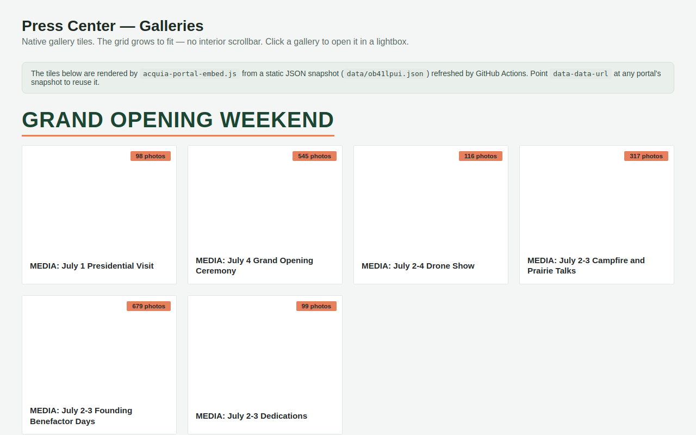

Try it right here
This loads the live project from its own domain, exactly as a visitor would see it.
What it does
Acquia DAM (Widen) portals can only be embedded as a fixed-height iframe with its own interior scrollbar, and the portal's JSON API sends no CORS headers, so a browser cannot read it directly. Both problems are solved server-side.
A scheduled job snapshots the portal's sections and galleries and permanently caches the thumbnails — necessary because Acquia's preview URLs are pre-signed and expire within a couple of hours. The result renders as ordinary page content that grows to fit. Clicking a tile opens the real gallery, deep-linked, so press users still download through Acquia's own controls.
What it can do
- Native auto-sizing tile grid instead of a fixed-height iframe
- Thumbnail caching that defeats expiring pre-signed URLs
- Deep-linked lightbox into the real portal gallery and its download controls
- Refresh every six hours by GitHub Action, plus a manual trigger
- Works with any Acquia DAM portal — add it to
config.json - About twenty
data-*styling options: accent, fonts, tile size, aspect ratio, badges
Make it your own
Start by forking the repository into your own organization. Everything below assumes you are working in your fork, not this one.
- Fork the repo and replace the entry in
config.jsonwith your portal: domain, shortcode, and path. The path is the portal URL segment with spaces removed. - Commit, then run the
update-portal-dataAction manually. It writesdata/<shortcode>.jsonand downloads thumbnails intodata/thumbs/<shortcode>/. - Enable GitHub Pages and set your own
CNAMEand DNS if you want a custom domain. - Override the brand defaults on the script tag with
data-accent,data-rule,data-heading-font, anddata-title-font. - Paste the embed into any raw-HTML block, pointing
data-data-urlat your own generated JSON.
Stuck on a step? Open an issue on the repository. Questions from people adapting these for their own institution are the most useful feedback we get.